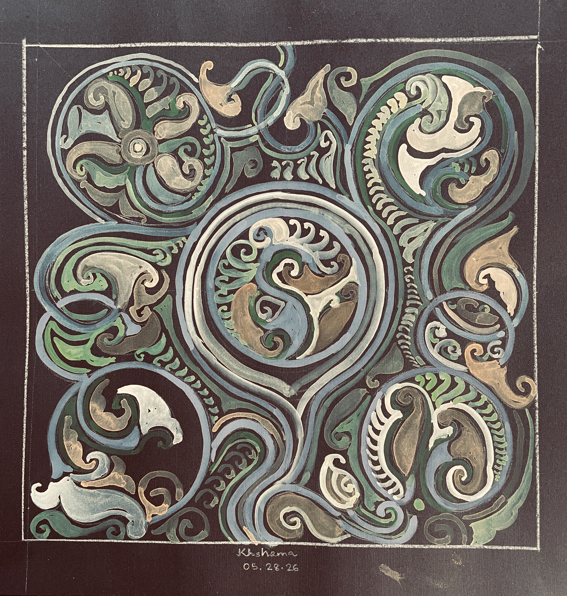

Welcome to Vol. 12 of the Bhavana Little Magazine! <br><br>
  <br><br>
| Edited by: The Bhavana Editorial Team | <br>
| Submission Deadline: Apr 30th, 2026 | <br>
| Publication Month: May, 2026 | <br><br>

Table of Contents  <br>
================= <br>
1. <a href="IdhantPoem.html">Maya</a>, by Idhant Ghosh<br>
2. <a href="PaintHobby.html">The Canvas</a>, by Amika Kar<br>
3. <a href="MotherMaryReview.html">A Review: Mother Mary Comes To Me</a>, by Swati Mukherjee<br>
4. <a href="ObamaArticle.html">Dreams From My Father</a>, by Agneya Dutta Pooleery<br>
12. <a href="Translate.html">Translation of "My father and guru Nandalal" originally written in Bengali by Gauri Bhanja</a>, by Haimonti Dutta<br>
